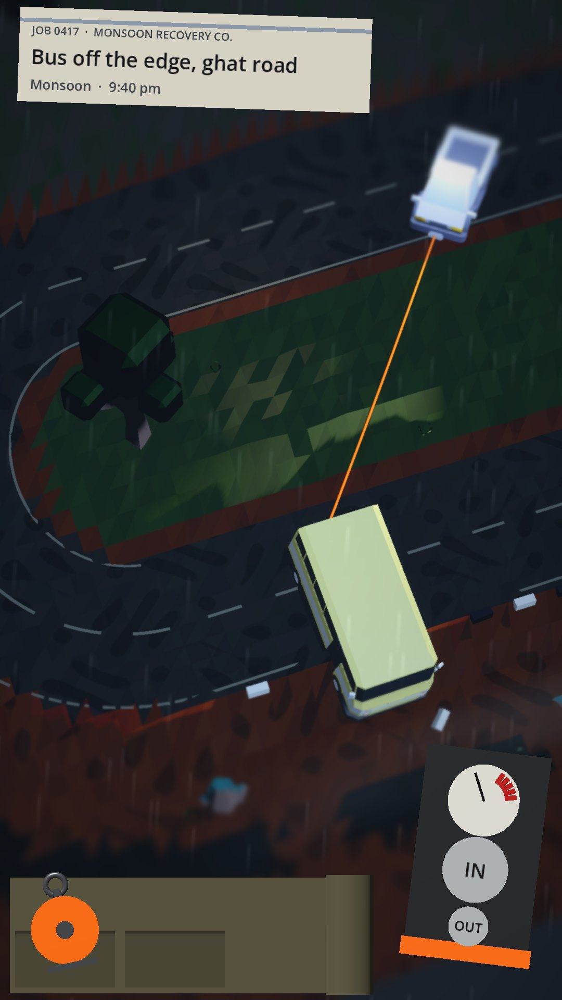

MONSOON RECOVERY CO.: BUS OFF THE EDGE
One frame rendered in Godot 4.7 with the Compatibility renderer, the same renderer the phone build will use. The rope is rigged 1:1 to the bus; the snatch block waits in the tool roll.

Check:
- Does it read as a scale model on a wet mountain hairpin at night?
- Does the orange rope stand out as the one thing to watch?
- Are the job slip, tool roll and remote right as in-world objects, with no panels?
Not in this frame yet: moving rain and mist, rope physics, anchor glow, the snap and replay, Clip Mode, sound, and the fps readout. Those come in checkpoints 3 and 4.
Credits. "Bus" by Poly by Google, via Poly Pizza, CC BY 3.0, recoloured and number-plate text removed. CC0: Kenney Car Kit and Nature Kit.